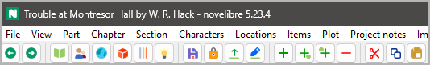

The toolbar
The toolbar provides buttons for common actions in the proposed workflow.

 Go back in the browsing history.
Same as
Go back in the browsing history.
Same as Alt-Left.
 Go forward in the browsing history.
Same as
Go forward in the browsing history.
Same as Alt-Right.
 Go to the “Book” branch and expand it.
Same as View > Show Book.
Go to the “Book” branch and expand it.
Same as View > Show Book.
 Go to the “Characters” branch and expand it.
Same as View > Show Characters.
Go to the “Characters” branch and expand it.
Same as View > Show Characters.
 Go to the “Locations” branch and expand it.
Same as View > Show Locations.
Go to the “Locations” branch and expand it.
Same as View > Show Locations.
 Go to the “Items” branch and expand it.
Same as View > Show Items.
Go to the “Items” branch and expand it.
Same as View > Show Items.
 Go to the “Plot lines” branch and expand it.
Same as View > Show Plot lines.
Go to the “Plot lines” branch and expand it.
Same as View > Show Plot lines.
Go to the “Project notes” branch and expand it. Same as View > Show Project notes.
 Save the project. Same as File > Save or
Save the project. Same as File > Save or Ctrl-S.
 Toggle the lock status of the project.
Toggle the lock status of the project.
Import the current manuscript. Same as selecting the manuscript under Import.
 Export the manuscript for editing.
Same as Export > Manuscript for editing,
but without confirmation for opening the document.
Export the manuscript for editing.
Same as Export > Manuscript for editing,
but without confirmation for opening the document.
 Add element.
Same as
Add element.
Same as Ctrl-N.
 Add child element.
Same as
Add child element.
Same as Ctrl-Alt-N.
 Add element on the parent’s level.
Same as
Add element on the parent’s level.
Same as Ctrl-Alt-Shift-N.
Delete selected elements.
Same as Del.
Move the selected element from the tree to the clipboard.
Same as Ctrl-X.
 Copy the selected element to the clipboard.
Same as
Copy the selected element to the clipboard.
Same as Ctrl-C.
Paste the element stored in the clipboard to the tree.
Same as Ctrl-V.
You can copy and paste the following tree elements via the system clipboard:
Parts and chapters,
sections,
stages,
plot lines,
plot points,
characters,
locations,
items,
project notes.
Hint
If multiple elements are selected, only the first one will be copied. However, if the element has “children”, these will also be copied and pasted.
Attention
Relationships are not included when copying to the clipboard. This also applies to the section viewpoint and for plot lines/plot points.
 Highlight elements with a specified tag. This opens a tag selection dialog.
Same as View > Highlight tagged elements.
Highlight elements with a specified tag. This opens a tag selection dialog.
Same as View > Highlight tagged elements.
 Reset the highlighting of tree elements.
Same as View > Reset Highlighting.
Reset the highlighting of tree elements.
Same as View > Reset Highlighting.
While tree elements are highlighted, the criterion is displayed on the right of the reset button.
 Toggle Text viewer.
Same as View > Toggle Text viewer or
Toggle Text viewer.
Same as View > Toggle Text viewer or Ctrl-T.
 Toggle Properties.
Same as View > Toggle Properties or
Toggle Properties.
Same as View > Toggle Properties or Ctrl-Alt-T.